Six strips across five temporal archetypes, plus a projectile-motion pilot, regenerated through the approved pipeline (assemble → whiten → glow → soften at one source pixel → feather) and filmed in HUNT at true game speed. Every in-game picture is a real frame; each GIF plays every second game frame at exactly 33.3 ms. fix/vfx-fade, 2026-09-23. Nothing is merged, and no other strip was touched.
| Strip | Archetype | Runtime route | Generations | Scale ratio old → new | Recommendation |
|---|---|---|---|---|---|
fx_seeker_trap | Trap | JAWS / REPAY, under the enemy row | 6 | 1.50 → 1.10 (widest row 1.79 → 1.31) | Needs tighten cue |
fx_seeker_mark | Mark · dual | CALL over the head, BRAND held behind the hunter | 6 | 0.28 → 0.25 · held 1.15 → 1.01 | Pass |
fx_shield | Shield · dual | Held barrier and the gain / absorb / undying flares | 11 | 0.93 → 1.19 | Pass |
fx_seeker_projectile | Projectile | SPRAY, flown hunter → target | 6 + 11 | 0.84 → 0.34 (now tumbles) | Pilot: review |
fx_press | Field | PRESS, held behind the hunter all fight | 10 | reverted to the old strip | Not approved |
fx_anvil_strike | Impact | THE ANVIL's HARDFACE on a creature | 14 | unchanged (old strip kept) | Stopped |
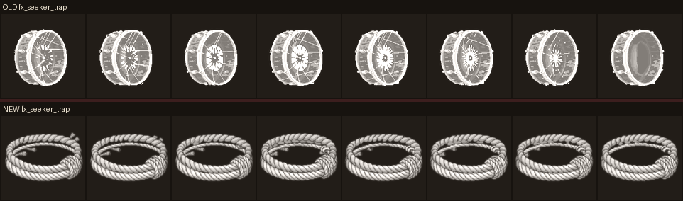
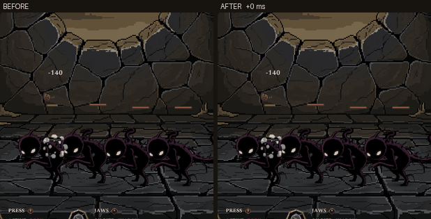
fx_seeker_trap_strip8_512.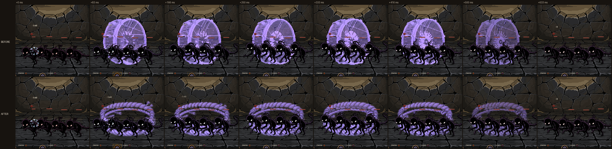
| Edge / soft / combat-size core | 0 / 0.0 % / 4,352 → 0 / 37.3 % / 3,842 |
| Diagnostic (settle) | none, before or after |
| Cost | 1 shape + 1 animation = 6 |
One placement, settles and holds, fades, with no rectangle and no second placement. The art spans the frame width, so the standard row fits the scale budget (1.50 → 1.10). The widest row still needs 1.31, the structural remainder you asked me to report. Under the recorded trap decision this is not yet enough: PixelLab barely moved the rope, so the snare appears already tight, with no appear → tighten → hold event. It passes every gate and needs one re-roll for the tension cue.
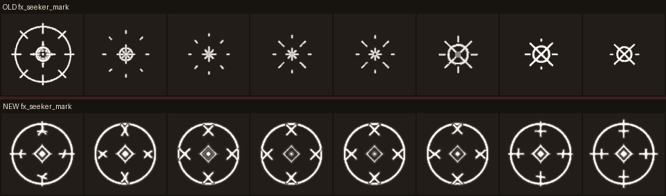
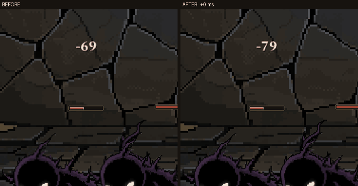
fx_seeker_mark_strip8_512.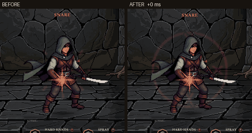
RH_SHOT_SWAP=hammer_press:sign_brand) loops the same strip behind the hunter. The old strip blinks; the new one holds.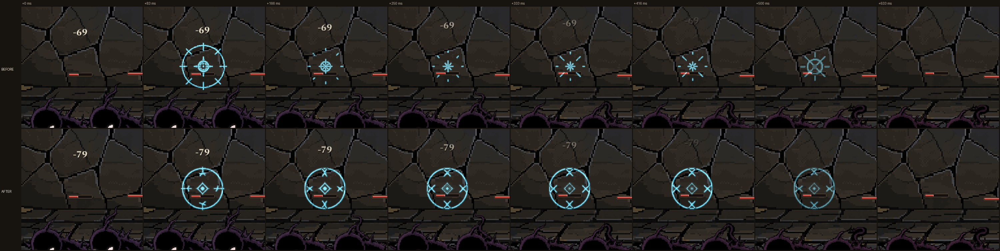
| Edge / soft / combat-size core | 0 / 0.0 % / 1,649 → 0 / 23.3 % / 1,569 |
| Diagnostic (settle + loop) | old: loop reset, broken 7→0 seam, 4.9× light swing · new: none |
| Cost | 1 shape + 1 pinned animation = 6 |
This is the dual-use contract all ten marks share, and pinning first = last is the recipe that satisfies it: it locks on as a one-shot and loops cleanly when held. It is the strongest result in the cohort.
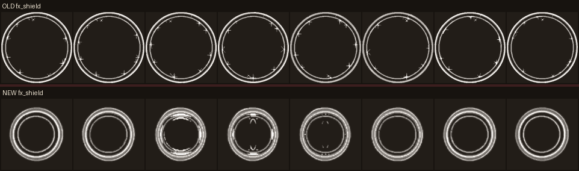
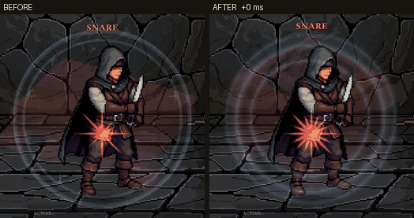
fightshield. Key fx_shield.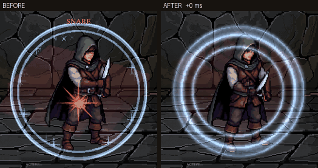
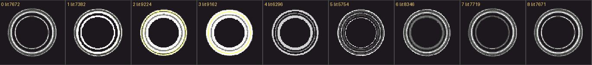
| Edge / soft / combat-size core | 255 / 0.0 % / 1,878 → 0 / 28.5 % / 1,826 |
| Diagnostic (loop) | new: light swing 1.23×, no reset |
| Cost | 1 shape + 2 animations = 11 |
Stable geometry, no flash, no edge. The visible ring stays the same size (481 × 474 vs 474 × 474); its frame grew to 1.19× native to hold that size, which is within budget.
The cohort knife was rejected: it read as a static picture moved across the screen. The runtime was not at fault. A diagnostic strip of the digits 0–7, filmed through SPRAY, shows the frames advancing at 8 fps while it flies (0 → 5 visible, 6–7 inside the tail fade). The strip itself was still.
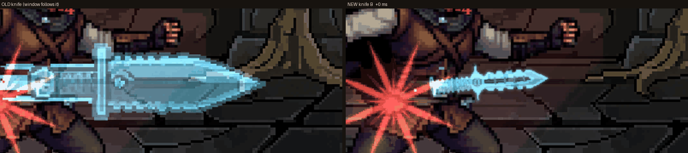
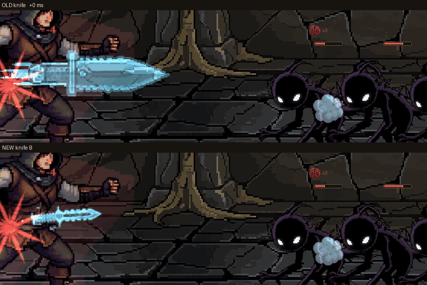
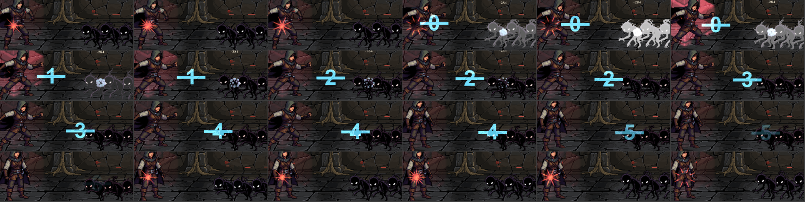
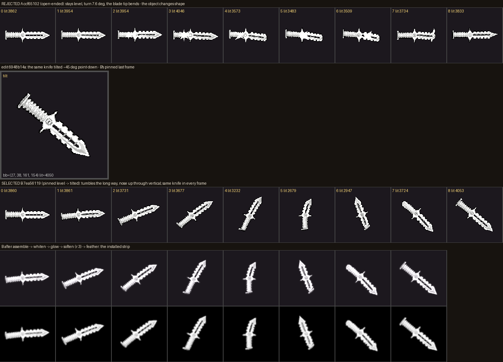
| Internal motion over frames 0–5 (change / turn / glint) | cohort 0.07 / 1.4° / 0.03 → new 0.60 / ~110° / 0.05 |
| Edge / soft / combat-size core | 0 / 10.3 % / 883 |
| Cost | 11 (two animations + one edit) |
It is alive at combat size and it is the same knife throughout. But it tumbles the long way (nose up through vertical, about 110° visible), has no glint or streak, and the rotation shrinks it on screen: sizing uses the height of the box around all eight frames, so the knife drops from about 320 px to about 130 px long. That is closer to a real knife, but it is a visible change.
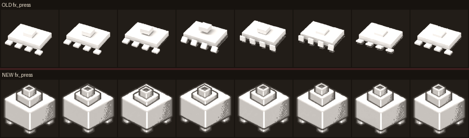
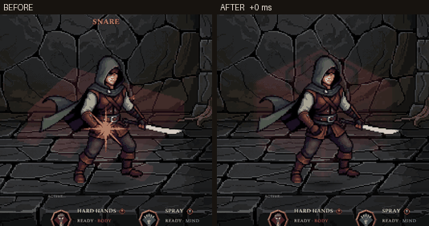
fx_press.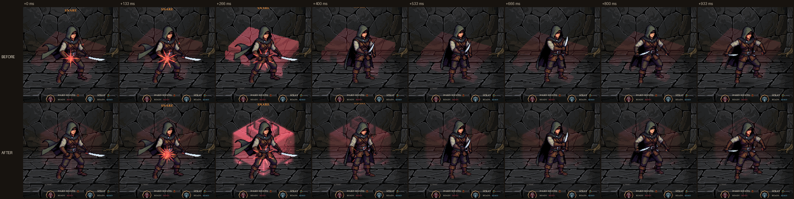
| Edge / soft / combat-size core | 0 / 23.3 % / 3,991 → 0 / 51.6 % / 7,363 |
| Scale ratio | 1.44 over (clamped, magnified) → 0.95 |
| Cost | 5 shapes + 1 pinned animation = 10 |
What regeneration was for is done: the field is within budget and loops cleanly, with no bloom over the hunter. But behind the hunter it reads as a plain box, and at its pulses as a big pink box. Every bold prop prompt returned a shaded object (a hydraulic press, a box with dials, three tyres), and "symbol" returned an opaque checkerboard. Decision: PRESS will be an abstract pressure field, a rune or line-art force symbol like the other fields. The square weight was reverted to the old strip, and PRESS is not regenerated in this pass.
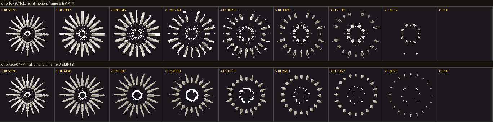
clip.py refuses empty frames.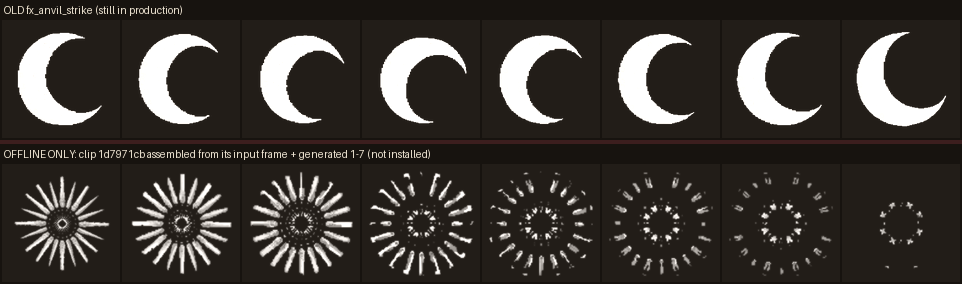
Stopped one short of the 15 cap, as agreed. Of the four shapes, two drifted to full-canvas spark bursts, one to a small needle star with a disc core, and the fourth (used) leaned toward a sun. The fix the evidence points to is an assembly rule, not more generations: build open-ended impacts from the input frame plus generated 1–7. That changes the rule for every future strip, so it is yours to decide.
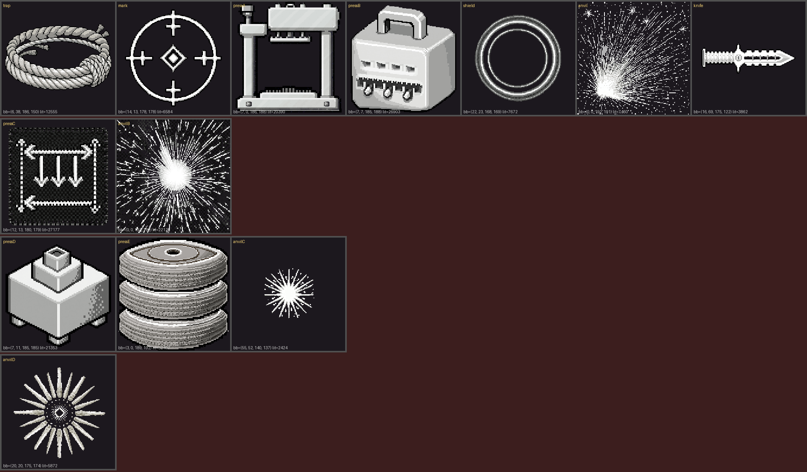
fxclips.py --impact-from-input, refused for anything held).